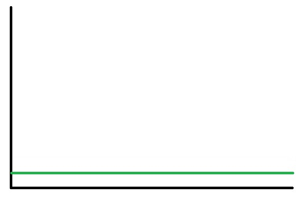
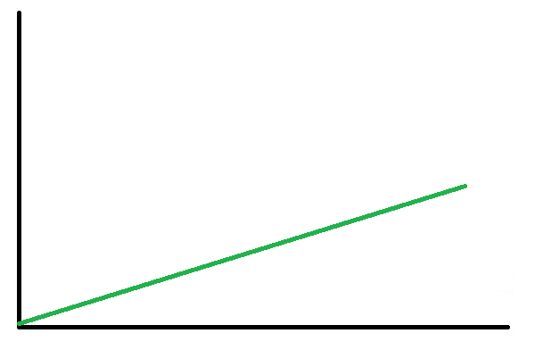
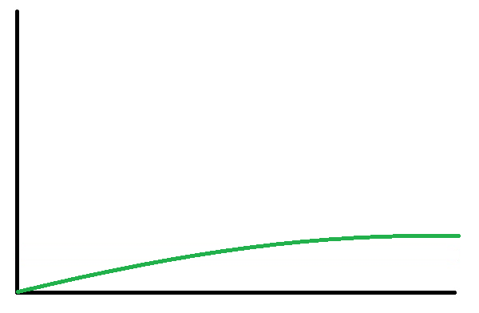
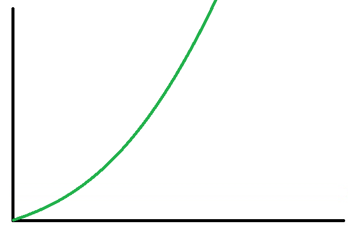
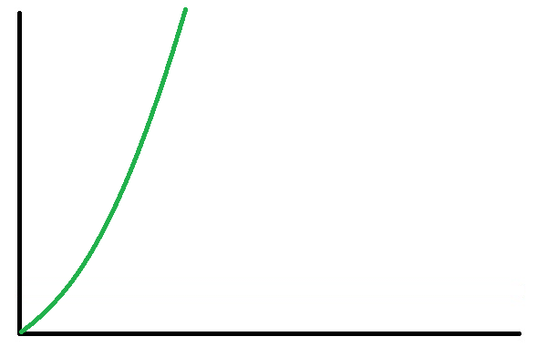
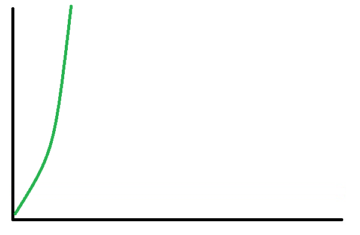
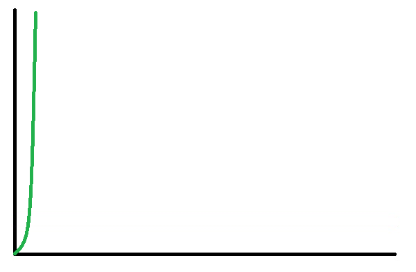

Złożoność stała, możemy rozwiązać w stałym czasie niezależnie od wielkości danych wejściowych.
obliczenie sumy ciągu arytmetycznego
public int sum(int[] numbers) {
if (numbers == null || numbers.length == 0) {
return 0;
}
return (numbers[0] + numbers[numbers.length - 1]) * numbers.length / 2;
}

Złożoność liniowa, czas rozwiązania problemu jest wprost proporcjonalny do wielkości danych wejściowych.
obliczenie sumy wszystkich liczb w tablicy wejściowej
public int sum(int[] numbers) {
int sum = 0;
for (int number : numbers) {
sum += number;
}
return sum;
}

Złożonośc logarytmiczna, czas rozwiązania zależy od wyniku logarytmu z wielkości danych wejściowych
Sprawdza czy liczba x istnieje w posortowanej tablicy wejściowej
public boolean binarySearch(int[] numbers, int number) {
int indexLow = 0;
int indexHigh = numbers.length - 1;
while (indexLow <= indexHigh) {
int indexMiddle = indexLow + (indexHigh - indexLow) / 2;
if (number < numbers[indexMiddle]) {
indexHigh = indexMiddle - 1;
}
else if (number > numbers[indexMiddle]) {
indexLow = indexMiddle + 1;
}
else {
return true;
}
}
return false;
}

Złożoność liniowo-logarytmiczna, czas rozwiązania problemu jest wprost proporcjonalny do iloczynu wielkości danych wejściowych i ich logarytmu
Zwraca tablicę, która będzie zawierała te same elementy,
które są w tablicy wejściowej. Tablica wynikowa jest posortowana w porządku rosnącym
public static int[] sort(int[] numbers) {
if (numbers.length <= 1) {
return numbers;
}
int[] first = new int[numbers.length / 2];
int[] second = new int[numbers.length - first.length];
for (int i = 0; i < first.length; i++) {
first[i] = numbers[i];
}
for (int i = 0; i < second.length; i++) {
second[i] = numbers[first.length + i];
}
return merge(sort(first), sort(second));
}
private static int[] merge(int[] first, int[] second) {
int[] merged = new int[first.length + second.length];
for (int indexFirst=0,indexSecond=0,indexMerged=0;indexMerged= first.length) {
merged[indexMerged] = second[indexSecond++];
}
else if (indexSecond >= second.length) {
merged[indexMerged] = first[indexFirst++];
}
else if (first[indexFirst] <= second[indexSecond]) {
merged[indexMerged] = first[indexFirst++];
}
else {
merged[indexMerged] = second[indexSecond++];
}
}
return merged;
}

Złożonośćkwadratowa, czas rozwiązania jest zależny od kwadratu ilości danych wejściowych
Sortowanie bąbelkowe
public int[] sort(int[] numbers) {
for (int i = 0; i < numbers.length; i++) {
for (int j = 0; j < numbers.length - 1; j++) {
if (numbers[j] > numbers[j + 1]) {
int temp = numbers[j + 1];
numbers[j + 1] = numbers[j];
numbers[j] = temp;
}
}
}
return numbers;
}

Złożoność wykładnicza, czas rozwiązania rośnie wykładniczo do ilości danych
Zwraca tablicę, która będzie zawierała wszystkie możliwe podzbiory elementów tablicy wejściowej
public static int[][] powerSet(int[] numbers) {
int two_pow_n = 1 << numbers.length;
int[][] powerSet = new int[two_pow_n][];
for (int subsetIndex = 0; subsetIndex < two_pow_n; subsetIndex++) {
powerSet[subsetIndex] = pickNumbers(subsetIndex, numbers);
}
return powerSet;
}
private static int[] pickNumbers(int subsetIndex, int[] numbers) {
int howManyOnes = 0;
int temp = subsetIndex;
while (temp > 0) {
if (temp % 2 == 1) {
howManyOnes++;
}
temp >>= 1;
}
int[] subset = new int[howManyOnes];
for (int charIndex=0,lastElementIndex=0;subsetIndex >0;charIndex++) {
if (subsetIndex % 2 == 1) {
subset[lastElementIndex++] = numbers[charIndex];
}
subsetIndex >>= 1;
}
return subset;
}

Złożoność silnia, czas rozwiązania zależy od silnii ilości algorytmów. Nie jest on możliwy do uruchomienia na dzisiejszych komputerach.
Nierozwiazywalne
